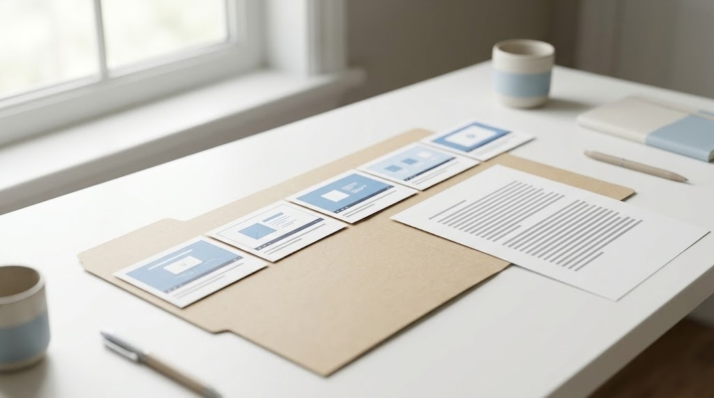

How to turn a YouTube video into a Notion page, pictures included
Notion cannot read a YouTube video for you, but it can import a Markdown file. The free way is to paste the video's transcript into a page below the embedded video. To get the screen pictures too, you turn the video into a Markdown file with an images folder. Then you zip that whole folder and import it using Notion's Convert Zip to pages option.
You watch a good tutorial or a talk on YouTube and you want it in Notion. That is where the rest of your notes already live. You paste the link and Notion shows a nice video player, but the page is still empty. Nothing from the video itself is searchable, and you cannot find the line you need without watching it again.
Notion stores what you give it, and a link is not the content. To make the video useful inside Notion you have to bring in the words and the screen pictures. I will explain the free way to do this. I will also explain the way that keeps the pictures, and the part where Notion drops things.
What is the free way to put a YouTube video in Notion?
The free way uses two things you already have: Notion's video embed and YouTube's own transcript. The embed keeps the video playable right on the page. The transcript gives you text that Notion can search.
- You paste the YouTube link into a Notion page and choose to embed it. This puts the player at the top.
- Go to YouTube and open the description under the video. Press Show transcript if the video has captions.
- You select the transcript text and copy it. Then you paste it into the Notion page under the player.
- Turn the main moments into headings. You can keep the time marks beside the lines you care about.
This works, and it costs nothing. It stops in two places. A video with no captions has no transcript to copy. The transcript is also just words, so a code sample or a slide the speaker points at never reaches your page. In a tutorial, that missing half is often the part you came for.
What file types does Notion import?
Notion's own import help page lists plain text, Text and Markdown (.txt, .md or .markdown), Word, CSV, HTML, PDF and ZIP. You start an import from Settings and then Import. You can also type a slash on a page and search for the importer. These imports work on the desktop and the web, but they do not work on the phone app yet.
The same page says what survives a Markdown import: plain text, standard Markdown, headings, lists and code blocks. It says anchor links and nonstandard Markdown extensions may not come through well. The size limit is 5 MB per file on the Free plan and 50 MB on a paid plan, and a ZIP import can hold up to 5 GB.
| What you import | What you get in Notion | Where it falls short |
|---|---|---|
| A pasted transcript | Searchable words under the video | No pictures, and nothing without captions |
| The doc.md file on its own | Headings, timestamps and words | The picture links point at files Notion never got |
| The whole folder as a zip | Words and the screen pictures in order | Check the first pictures before trusting the rest |
| The doc.pdf file | The finished document as a PDF | Better to read than to edit |
How do I get the screen pictures into Notion as well?

I built VideoDoc because I wanted my notes and my AI to see the slides, not just hear the speaker. You paste a public YouTube link and press Make document. It writes a PDF and a Markdown file of the words with their timestamps. It also places a picture of the screen at the moment it changes, so a slide that stays up for ten minutes appears once, not forty times.
Here is the detail that decides how you import it. VideoDoc's Markdown is a file called doc.md, and its pictures sit next to it in an images folder. Each picture is a plain Markdown image line such as !Frame at 04:12, and each piece of speech starts with its time in bold, like [04:12]. That is all standard Markdown, with no tool-specific extensions.
If you import doc.md by itself, Notion gets the words but not the pictures. This happens because the image files were never part of the upload. Notion's help page says the same thing about HTML, because images come in only when their files are included. The fix is to send the whole folder, not just the file.
- Make the document in VideoDoc, then open its output folder. You will see
doc.md,doc.pdfand theimagesfolder. - Zip the whole output folder, not the loose files inside it, so
doc.mdandimagesstay side by side. - In Notion, type
/zipon a page or go to Settings, then Import, and upload the zip to Convert Zip to pages. - Open the new page and check the first few pictures sit beside the right lines before you rely on the rest.
A YouTube playlist works the same way. VideoDoc can put a whole playlist into one document. It makes each video its own section and puts its pictures in numbered folders inside images. The contents list at the top is a plain numbered list instead of anchor links, so it comes into Notion exactly as written.
VideoDoc only reads public videos by link, so a private or members-only video will not work. Each time mark arrives in Notion as bold text, not a link, so you open the video from the source line at the top of the page instead. Notion makes a copy when it imports, so a later change to the files on your disk will not update the Notion page. A long video makes a big images folder, so a free Notion plan will hit its limits sooner, and Notion can change its importer at any time, which is why I suggest checking the first pictures.
Try it on the tutorial you keep going back to.
Try it free in your browser on a file you already have. Pro is $19 once for a lifetime licence on 2 machines, on Windows and Apple Silicon Macs.
If your notes live in files on your own disk instead, the Obsidian version of this guide is simpler. This is because Obsidian reads the images folder right where it sits.
Quick questions
Can Notion transcribe a YouTube video?
No. Pasting a YouTube link into Notion gives you an embedded player, not the words. You have to bring in a transcript or a document made from the video.
How do I import a Markdown file with images into Notion?
Keep the Markdown file and its images folder together. Zip the whole folder and import the zip with Convert Zip to pages. If you import the Markdown file alone, the picture links point at files Notion never received.
What is the file size limit for a Notion import?
Notion's help page gives 5 MB per file on the Free plan and 50 MB per file on paid plans. A ZIP import can be up to 5 GB, but very large file counts can sometimes fail.
Do the timestamps stay clickable in Notion?
They come in as bold text, like [04:12], not as links to that moment. The video's source link stays at the top of the page, so you can open it and skip to the time yourself.
Pick the one tutorial you keep reopening. Turn it into a document tonight and import the zipped folder into Notion. Check the first three pictures, and you will know whether to do the rest the same way.


I am a telecom engineer and business analyst from Pakistan, and I build small honest desktop tools under Designesh. I made VideoDoc because I wanted my AI to read the lectures I study from. Everything here is tested on my own machine first.